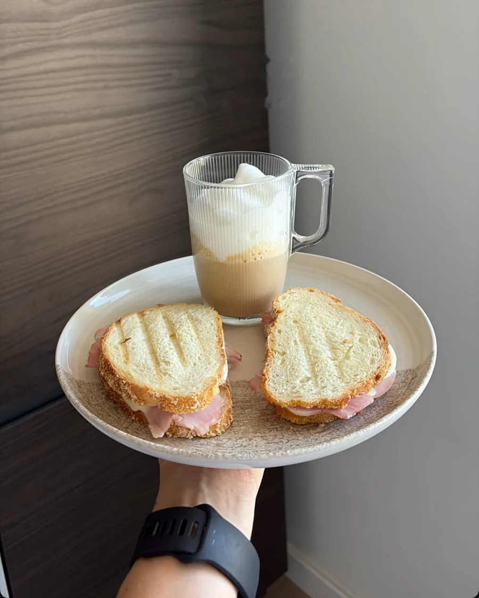
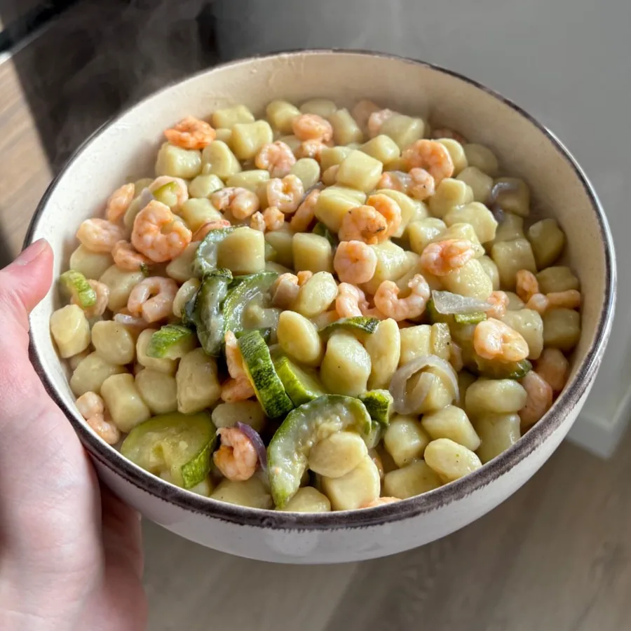
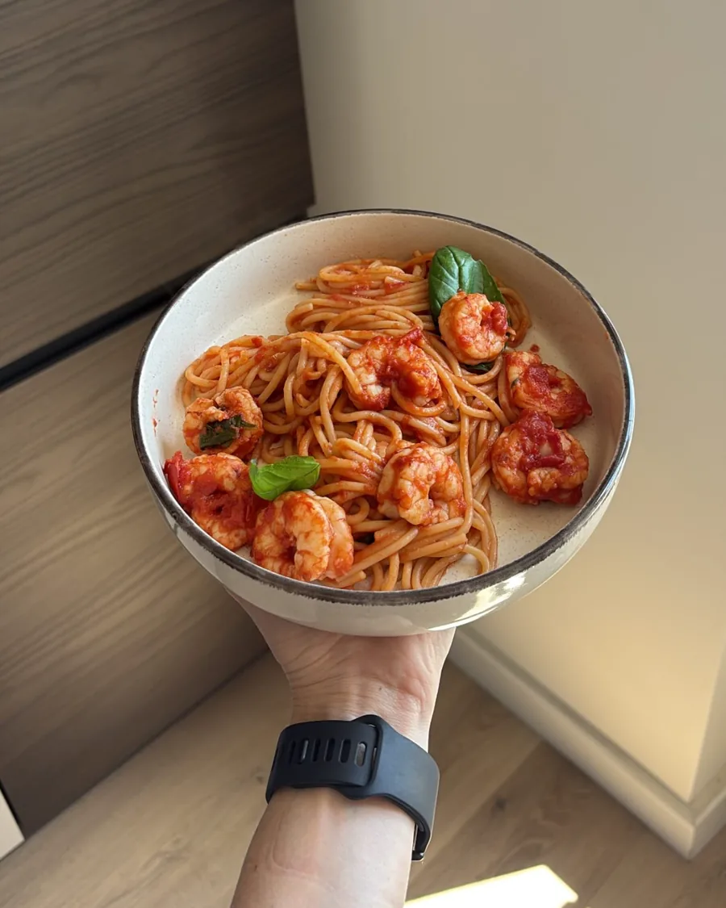
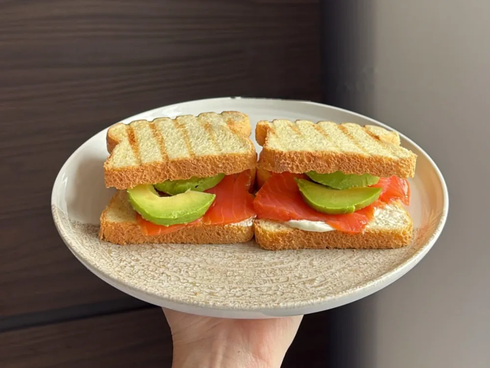
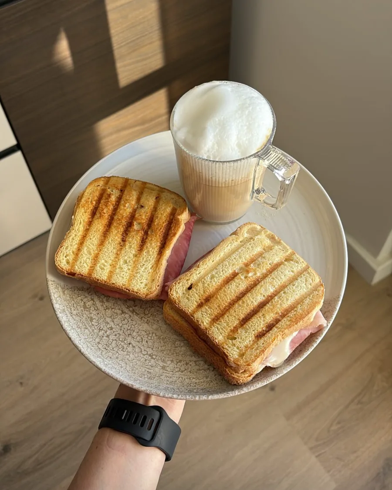
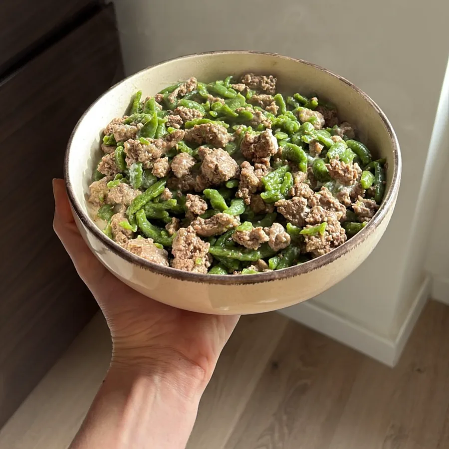
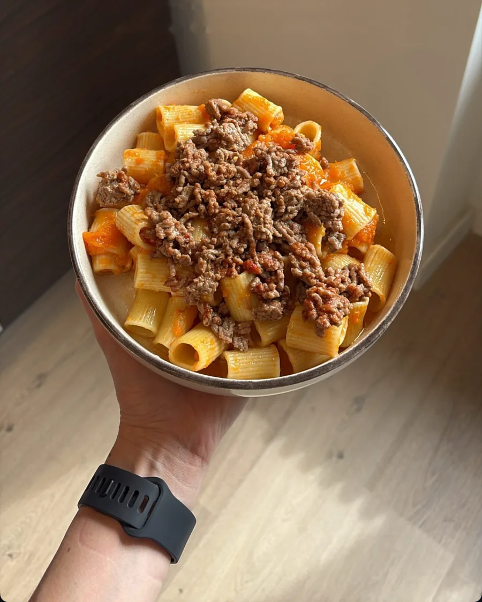
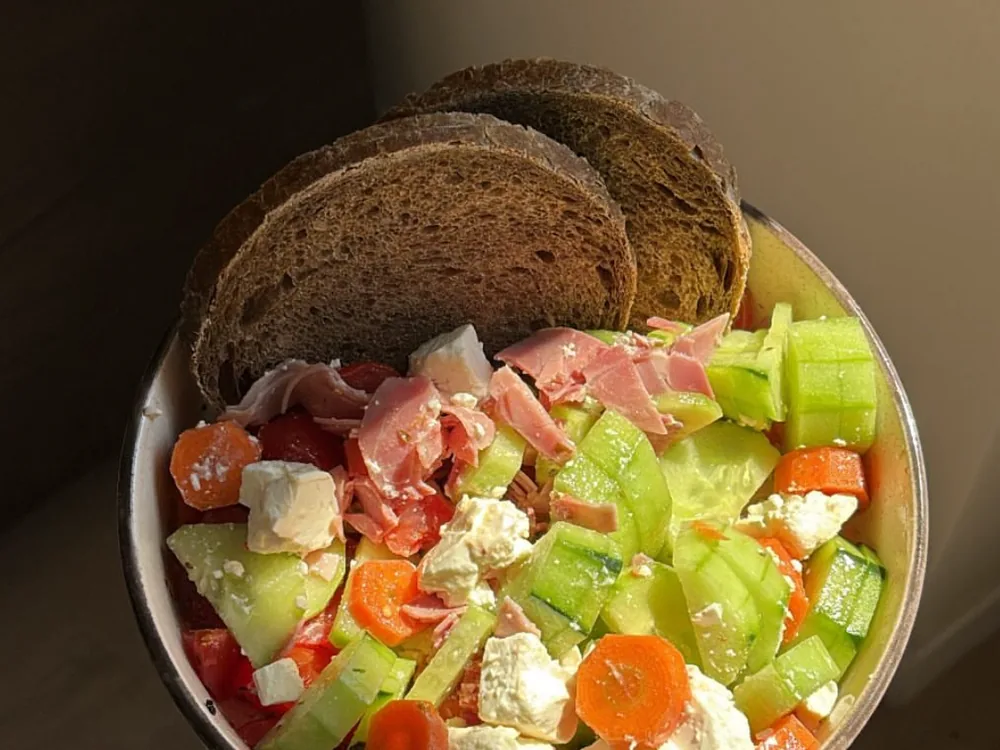

Nutrizione clinica
Un percorso alimentare costruito sulle tue abitudini, sui tuoi esami e sui tuoi obiettivi.
Sono Naomi Acciaro, biologa nutrizionista. Mi occupo di nutrizione clinica e sportiva, a Roma e online.
Mi occupo di come mangiamo e di come il corpo risponde: a tavola, in allenamento, nella vita di tutti i giorni.
Sono biologa nutrizionista e lavoro a Roma e online con persone che vogliono mangiare meglio, allenarsi meglio o semplicemente capire che cosa funziona per loro.
Sono anche antropometrista ISAK Level 1: misuro il corpo con un protocollo internazionale, così si parte da dati precisi e non da impressioni.
Le scelte partono da dati, non da impressioni.
Capisci il perché di ogni indicazione.
Il percorso si costruisce sulle tue abitudini.
Un percorso alimentare costruito sulle tue abitudini, sui tuoi esami e sui tuoi obiettivi.
Le misure del corpo prese con il protocollo ISAK, da ripetere nel tempo per vedere come cambia.
L'alimentazione di chi si allena, in base al tuo sport e al tuo calendario.
Qualche esempio di piatti semplici da preparare a casa. Non sono un piano alimentare: ogni percorso viene costruito sulla persona.








Scegli giorno e orario su MioDottore, a Roma o online.
Parliamo di abitudini, obiettivi ed esami. Se serve, misuro il corpo con il protocollo ISAK.
Un piano alimentare scritto per te, con indicazioni chiare per metterlo in pratica.
Controlli periodici per vedere come stai e aggiustare il percorso. Tempi e numero di incontri dipendono dal tuo obiettivo.
La prenotazione si fa su MioDottore, dove trovi i giorni e gli orari disponibili.
Roma | Online